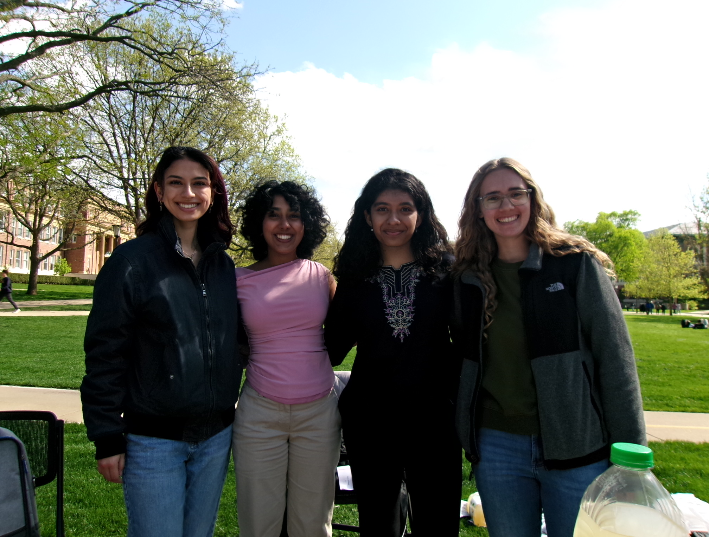
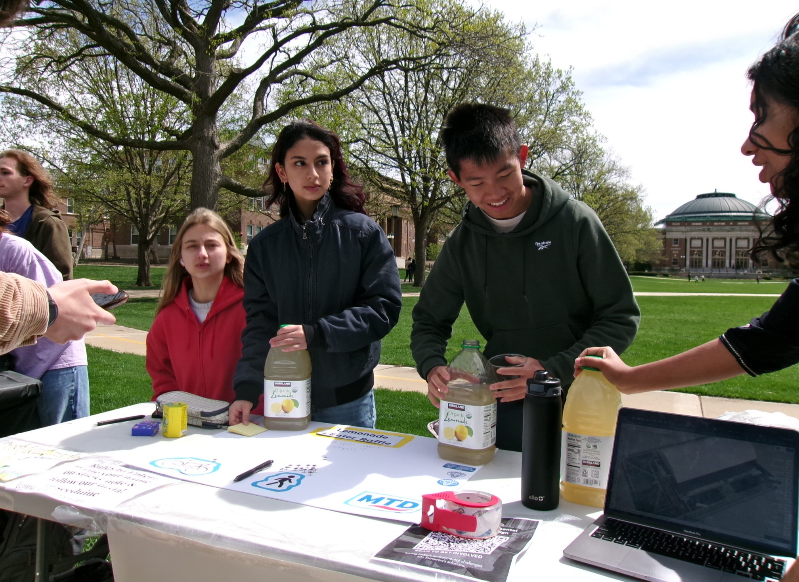
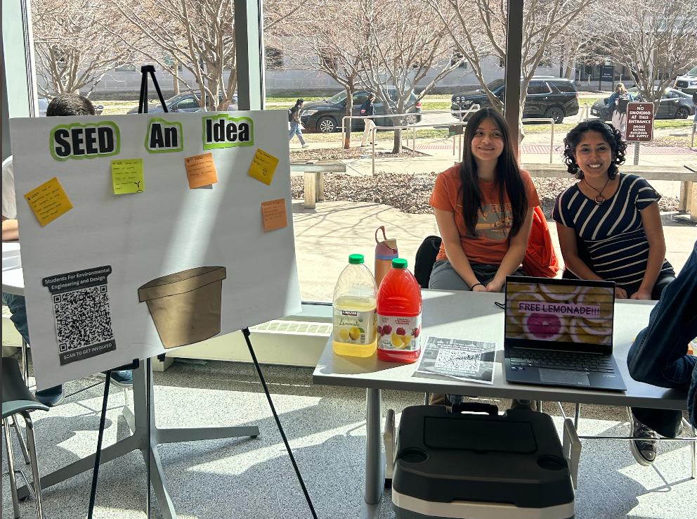

Tell us what you care about. We’ll show you what to do next.
Opportunities picked for you. Based on your interests, goals, and availability, these are the sustainability opportunities we think fit you best. Find one you like and get involved.
Discover more ways to get involved on campus.
Find sustainability-focused student groups.
Explore upcoming sustainability events.
Learn more about sustainability at UIUC.
Students for Environmental Engineering and Design (SEED) is a student organization at UIUC focused on giving students hands-on experience with sustainability and environmental engineering. Through technical projects, professional connections, and campus involvement, SEED helps students take what they learn in class and apply it to real environmental challenges. One challenge we noticed is that there are already a lot of sustainability opportunities across campus, but students do not always know about them or know which ones fit their interests. Events, volunteer needs, projects, and other opportunities can get lost across newsletters, emails, calendars, and different organizations. Apparently, finding something to do has itself become an extracurricular activity.
SEED Match is a simple tool designed to make that connection easier. Students tell us what they are interested in, what type of involvement they are looking for, and how much time they have. SEED Match then connects them with relevant sustainability opportunities and gives them a direct way to get involved making it easier to go from “I want to help” to actually showing up.


